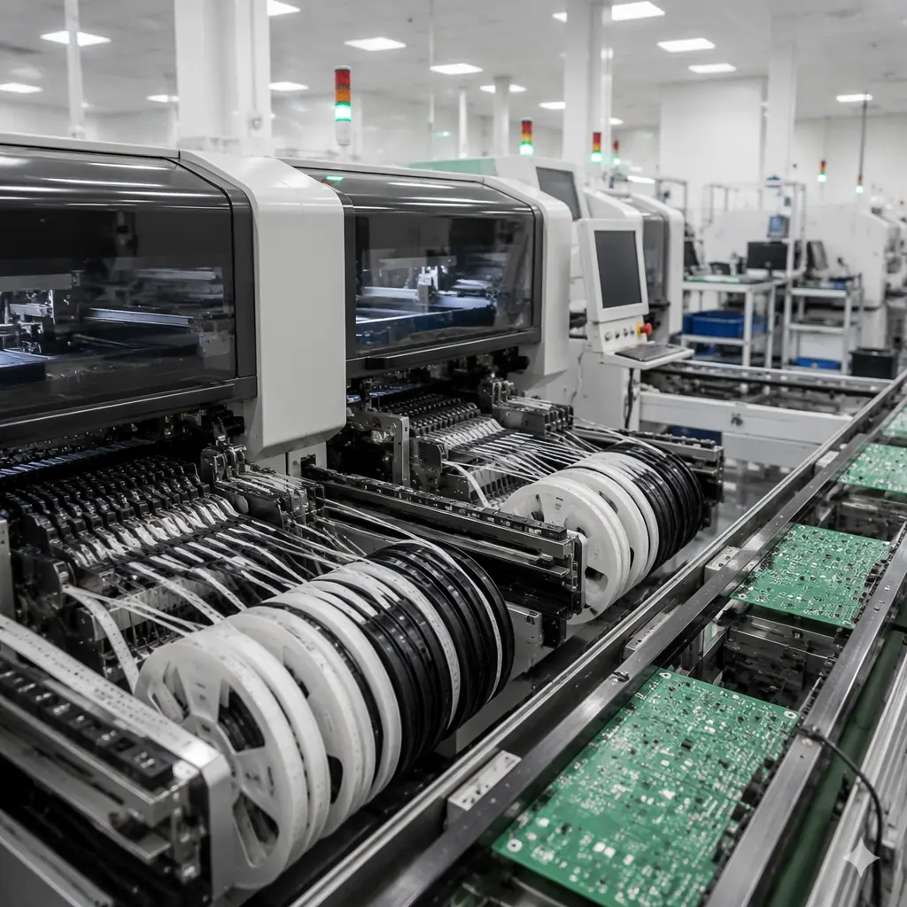

The traditional PCB supplier qualification playbook — fly to Shenzhen, walk the factory floor, shake hands with the quality manager — hasn't been practical since 2020. But the need to verify supplier capability is more critical than ever, as supply chain diversification pushes procurement teams to qualify new manufacturers without the budget or time for on-site visits. A well-structured remote audit can achieve 80–90% of the value of an on-site visit — if you know what to ask for and what to look for on a video call.
At Huaxing PCBA, we've conducted 200+ remote factory tours and capability presentations for overseas customers over the past three years. This guide distills that experience into a procurement-ready framework: what documentation to request before the call, which production areas to demand live video from, and how to spot the subtle signs that distinguish a capable supplier from one that talks a good game. For the in-person version, see our 10-point supplier audit checklist — this guide complements it for remote-first qualification.

Before the Video Call: Document-Based Pre-Qualification
The first phase of a remote audit happens before anyone opens a camera. Requesting the right documents and reviewing them systematically eliminates 60% of unsuitable suppliers before you invest time in a live call. Here's the pre-qualification document package to request:
Certifications: Current, Scanned, with Expiry Dates
Request scanned copies (not just certificate numbers) of ISO 9001, IATF 16949 (automotive), ISO 13485 (medical), UL (file number + authorization page), and any industry-specific certs (AS9100 for aerospace, ISO 14001 for environmental). Verify each certificate number against the issuing body's online database — 3–5% of Chinese suppliers have been found with lapsed or fraudulent certifications in third-party audits. Our certifications and compliance guide lists the verification portals for each standard.
Equipment List: Make, Model, Year, Maintenance Records
A generic "8 SMT lines, 32 layers" capability statement tells you nothing about actual capability. Request a detailed equipment list with: manufacturer and model number, year of installation, and last calibration date for measurement equipment. A factory running 2018+ vintage Yamaha or ASM SIPLACE placement machines is a different tier than one with 2012-vintage equipment. The equipment list also tells you if their claimed capability (e.g., 0201 placement) is actually supported by their machine specifications. See our supplier RFP guide for how to structure capability questions in your RFQ.
Process Capability Data: CpK Reports for Critical Processes
Ask for CpK data (process capability index) for at least three critical processes: plated through-hole diameter, solder paste deposition volume, and impedance control. A CpK of ≥1.33 indicates a stable, capable process; ≥1.67 is world-class. Suppliers who can't produce CpK data for processes they claim to control tightly are relying on inspection rather than process control — a red flag for consistent quality at volume. See our quality metrics and DPPM benchmarks guide for industry targets.
Sample Quality Records: First Article, Microsection, and AOI Reports
Request anonymized but complete quality records from a recent production batch — first article inspection reports, cross-section micrographs, AOI defect maps, and final electrical test logs. Review them for completeness: a proper first article report should include dimensional measurements for every critical feature, not just a checkbox list. The quality of their documentation predicts the quality of their product. Our cross-section report interpretation guide helps you assess the technical content.
Key Takeaway: Document review before the video call eliminates 60% of unsuitable suppliers. The suppliers who can't or won't provide CpK data, equipment lists, and sample quality records are the ones whose factory floor will look chaotic on video — save your time and disqualify them at the document stage.
Structuring the Live Video Audit: What to See — And What to Demand
A remote video audit fails when the supplier controls the narrative — showing you only what they want you to see. Successful remote audits follow a structured agenda where you dictate the areas and processes to observe, not the other way around.
Start at Receiving Inspection — Not the Showroom
Begin your video tour at incoming quality control (IQC), not the polished SMT floor. Watch how they inspect incoming laminates and components. Key questions: Do they have a microscope with digital camera at the IQC station? Are inspection criteria posted visibly (IPC-A-600 reference photos)? Do they quarantine rejected material with physical segregation, not just a database flag? A supplier that does thorough incoming inspection catches material defects before they become production problems. Our incoming quality inspection guide details what to look for at this station.
Demand to See the AOI Defect Review Station in Operation
Automated optical inspection (AOI) machines are standard equipment. What matters is what happens after the AOI flags a defect. Ask to see the AOI review station live: watch an operator review flagged images and make accept/reject decisions. A good operator can explain why they're accepting or rejecting a specific solder joint. If the AOI station has a "pass-all" culture where operators override most flags without inspection, the machine is decorative. See our AOI vs X-Ray inspection guide for what automated inspection can and can't catch.
Walk Through the Chemical Lab — Not Just the Production Floor
The chemical analysis lab reveals more about a factory's technical depth than the SMT floor. Ask to see: their ionic contamination tester (ROSE or SIR — should be clean and calibrated), cross-section preparation equipment (grinding/polishing station with microscope), and solderability test setup. Effective labs have dedicated technicians who can explain what they're testing and why — not production operators pulled in for show. See our ionic contamination guide and microsection analysis guide for what their lab should be capable of.
Ask to See the Rework Station — And Count the Boards
Every factory has a rework station. What matters is the ratio of boards passing through rework vs. total throughput. Walk past the rework benches during the video tour and note how many boards are waiting for rework. A factory with >5% of production volume going through rework has a first-pass yield problem. Also observe the rework tools: proper BGA rework stations (with bottom-side preheat) vs. hot-air guns on a bench tell you about their commitment to quality rework. Our rework and repair guide covers what proper rework equipment looks like.
Document Verification During the Call: 5 Reality Checks
Bring the pre-qualification documents to the video call and verify them against physical reality. These five checks catch the most common exaggerations:
| # | Document Claim | Video Verification | Red Flag If |
|---|---|---|---|
| 1 | "8 SMT lines" | Count live lines during walkthrough; note machine brands vs. equipment list | Fewer lines visible, or 2+ lines idle during normal shift |
| 2 | "ISO Class 7 cleanroom" | Look for particle counters on walls; ask operator to show current reading | No particle monitoring visible, staff not wearing proper cleanroom attire |
| 3 | "0201 component capability" | Find a setup station with 0201 feeders loaded; check reel labels | No 0201 feeders visible on any machine; feeders all 0402 or larger |
| 4 | "100% AOI + ICT" | Find the ICT fixture storage area; count fixtures for active products | No ICT fixtures visible; only flying probe testers on floor |
| 5 | "Traceability per IPC-1782" | Ask to scan a board's barcode and trace it back to component reel lots | Barcode doesn't resolve, or trace takes >5 minutes |
For suppliers who won't show specific areas — "that section is under maintenance" or "it's a restricted cleanroom zone" — treat it as a gap in verification, not a passed check. A legitimate supplier with nothing to hide will find a way to show you, even if it means scheduling a follow-up call when the area is accessible.
Red Flag Pattern: Suppliers who refuse to show the chemical lab, AOI review station, or rework area during a video call are almost certainly hiding process quality issues. These are the areas where process control (or lack of it) is most visible. A supplier who shows only the gleaming SMT floor and finished goods area is running a marketing tour, not an audit.
Post-Audit: The Trial Order as Final Verification
A successful remote audit gets you to the trial order stage — but the trial order is itself the most important verification step. Here's how to structure it to maximize what you learn:
Include a "Canary" Feature in Your Trial Design
Add one feature to your trial PCB that challenges the supplier's claimed capability — a 0.2mm via if they claim microvia capability, a controlled impedance trace pair if they claim ±5% tolerance, a fine-pitch BGA if they claim 0.4mm pitch placement. This "canary" feature tells you whether their capability claims survive contact with actual production. If the canary fails but everything else passes, their capability is one tier below what they claim. Our first article inspection guide covers what to check in the trial batch.
Request Third-Party Inspection on the Trial Batch
For your first order, commission an independent inspection agency (SGS, Bureau Veritas, TÜV) to perform pre-shipment inspection. This costs $300–800 depending on batch size and location and provides an unbiased quality assessment. Compare the third-party report against the supplier's internal quality records — discrepancies between the two indicate either weak internal inspection or selective reporting. See our pre-shipment inspection guide for what an OQC checklist should cover.
Perform Cross-Section Analysis on Trial Boards
Sacrifice 2–3 boards from the trial batch for destructive analysis — cross-section the plated through-holes and microvias to verify copper thickness, plating uniformity, and interlayer registration. This is the definitive check on their fabrication process quality and cannot be faked. A supplier who consistently meets IPC-6012 Class 3 requirements for copper thickness (minimum 25µm average, 20µm minimum at any point) on trial orders will almost certainly maintain that quality at volume. Our microsection analysis guide shows what a passing cross-section looks like.
Evaluate Communication Quality Through the Trial Process
The trial order is also a trial of the supplier's communication. Do they proactively flag DFM issues before production? Do they provide clear engineering questions, or vague "there's a problem with your file" messages? Do they meet the quoted lead time, and if not, do they communicate delays before the due date? A supplier with excellent technical capability but poor communication will cause more problems at scale than a slightly less capable supplier who communicates clearly. Our supplier transition guide covers the full qualification-to-production pipeline.
Building a Long-Term Remote Quality Assurance Program
Remote auditing isn't just for initial qualification — it's an ongoing process for managing supplier quality without on-site presence. Here's a lightweight program structure:
Monthly Quality Data Review (30-Minute Video Call)
Schedule a recurring 30-minute call to review: first-pass yield for your products, DPPM trend, any customer complaints or returns, and upcoming process changes. Ask for the data 48 hours before the call so you can review it — don't let the supplier present it for the first time on the call. Track the trends, not just the absolute numbers: a declining first-pass yield from 98% to 96% in three months is more concerning than a stable 96%. Our supplier quality scorecard guide provides a template for structured monthly reviews.
Quarterly Process Audit: Focus on One Area Deeply
Each quarter, pick one process area for a deep-dive remote audit — solder paste printing one quarter, reflow profiling the next, final electrical test the next. Request a 45-minute focused video session on just that process, with the process engineer (not the sales manager) leading the walkthrough. This rotating deep-dive approach covers all critical processes over a year without requiring multi-hour marathon audit calls.
Annual Full Remote Re-Audit with Updated Capability Check
Once per year, repeat the full remote audit process with updated document requests and a complete video walkthrough. Compare against the previous year: has the equipment list changed? Are CpK values improving or stable? Have any certifications lapsed? This annual cycle catches capability drift before it affects your product quality. Our supplier audit guide provides the full checklist for both initial and annual re-audits.
Summary: Remote Audits Are 80% as Effective — If You Control the Agenda
A remote factory audit done right — with structured document pre-qualification, an agenda that you control, verification of document claims against physical reality, and a carefully-designed trial order — provides 80–90% of the assurance of an on-site visit. The remaining 10–20% gap is primarily in assessing factory culture: how operators interact with managers, the general level of order and discipline, and the intangible "feel" of a well-run operation. That gap narrows with each successful production batch.
At Huaxing PCBA, we welcome remote audits — structured or informal. We'll provide equipment lists with serial numbers, live video from any production area you request, and process capability data for your review before, during, and after the call. Start with our supplier RFP guide to structure your qualification process, or contact our quality team directly to schedule a remote capability presentation tailored to your product requirements.